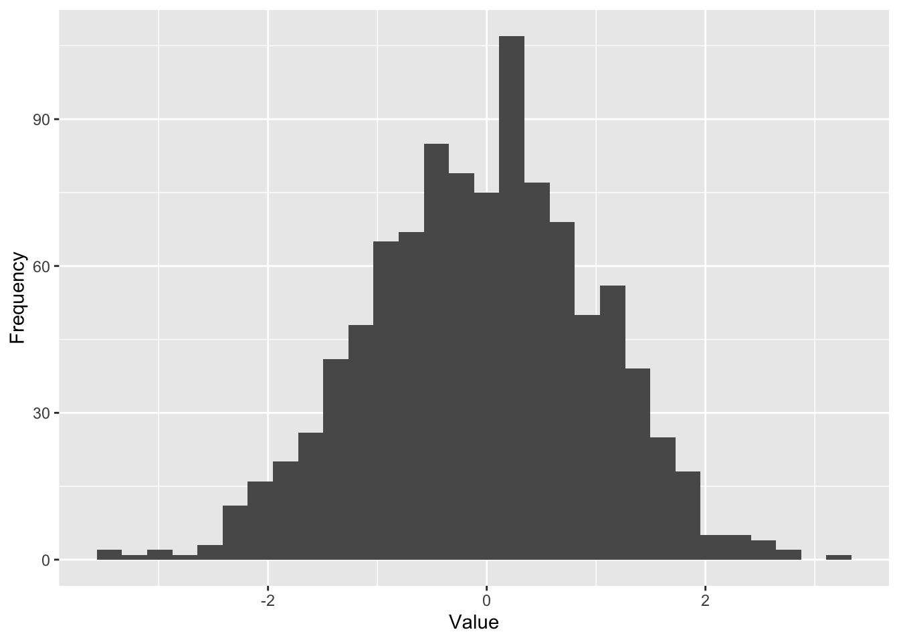

Chapter 6 Code chunks
Let’s talk a little more about code chunks (and in-line code), since they are the main reason why Rmd is so useful when it comes to reports of statistical analysis. For one, they are great for creating tables and figures. As a basic demonstration, we can create a simple histogram. Again, at this point, you don’t have to worry about understainding the code itselt. The important bit is that, once you know how to create fancy plots and tables, you can create them directly in your .Rmd file to put them in your paper/report/presentation:
library(ggplot2) # load the ggplot2 package
qplot(rnorm(1000), xlab = "Value", ylab = "Frequency") # basic quick histogram## `stat_bin()` using `bins = 30`. Pick better value with `binwidth`.
That’s pretty cool, isn’t it? What’s arguable even cooler is the fact, that you can incorporate code in the actual body text. Let’s say we have a chunk of code that runs some analysis, for example takes the mean age of our sample.
# create a made up sequence of numbers and pretend they are the ages of our participants
age <- c(34, 22, 26, 25, 43,19, 19, 20, 33, 27, 27, 26, 54)
# calculate their mean, rounded to 2 decimal places
mean_age <- round(mean(age), digits = 2)With Rmd, we don’t really even have to know what the value of the mean is when writing the results. We can simply use in-line code to have R Studio generate a document that say that the mean age was 28.85.
For the time being, don’t worry about how this is actually done. We will cover that later in depth. For now, simply rejoice in the fact that it can be done ;).
This feature has a very useful consequence: You can write a document in such a way that, if something about your data or analysis changes, you can simply edit the code in the appropriate chunks, re-generate the output file and all the values will get updated. Imagine having to redo a table of 40, 50, 100 numbers – that’s an awfully teatious task and it’s prone to human error. With a proper use of R Markdown you will never have to do it! Imagine how many hours of work that will save you (trust us, it’s a lot). How amazing is that?